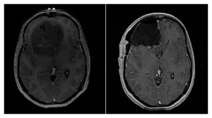
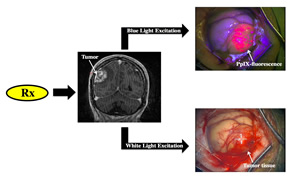
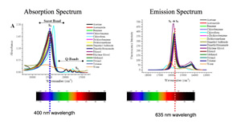
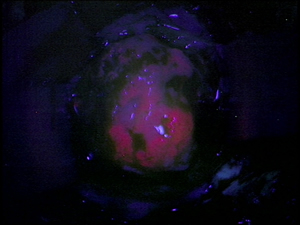
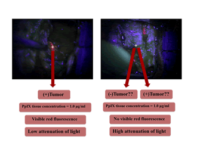
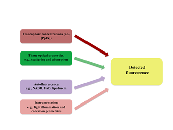
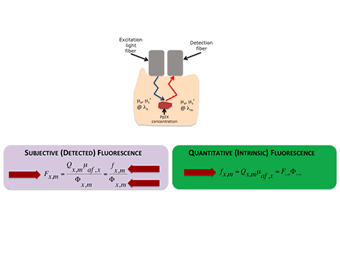

Background
 Figure showing pre- (left) and post-operative (right) T1-weighted MR axial images of a patient with a diagnosis of GBM (WHO IV). The pre-operative image shows a large mostly non-enhancing frontal lobe tumor mass, while the post-operative image shows a complete resection of the bulk of tumor |
 Conceptual figure depicting the basic concept of fluorescence guided resection. The patient receives a drug that leads to a selective accumulation of a fluorescent biomarker in tumor tissue, which can subsequently be detected using appropriate fluorescence detection technologies |
Figure showing the heme biosynthetic pathway. ALA is the initial substrate, such that exogenous administration of ALA, leads to overproduction and subsequent accumulation of PpIX in tumor tissues prior to conversion of PpIX to heme. |
 PpIX absorption and emission spectra, showing the main absorption peak at 405 nm and the two main emission peaks at 635 nm and 710 nm, and the characteristic broad emission shoulder of PpIX. |

Fluorescence Guided Resection@Dartmouth
 Representative intraoperative image under blue light excitation in a region of tumor that has significantly accumulated PpIX. The bright red PpIX fluorescence emissions can be easily distinguished in this image, provided sufficient fluorescence contrast between tumor and normal. |
 Conceptual figure showing to regions of tissue with equal amounts of PpIX, but vastly different visible fluorescence characteristics as a result of the distorting effects of tissue optical properties on the emitted fluorescence spectrum. |
 The major factors impact the detected fluorescence include the fluorophore concentrations in tissue, the tissue optical properties, the autofluorescence of tissue, and instrumentation details. |
 The detected fluorescence is a factor of both the intrinsic fluorescence due only to fluorophores present in tissue and an attenuation factor which impacts both the excitation and emission light. To obtain an objective measure of the fluorophores in tissue, the quantitative or intrinsic fluorescence has to be determined by correcting the detected fluorescence by the attenuation of light in tissue. |